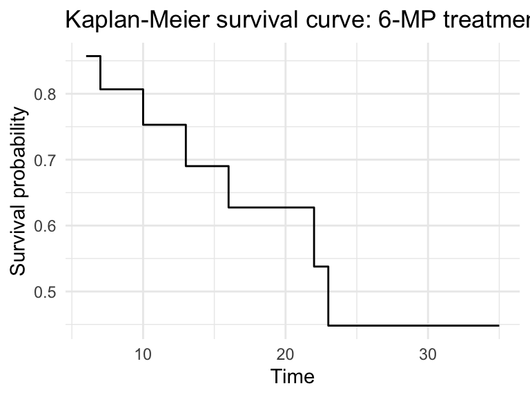
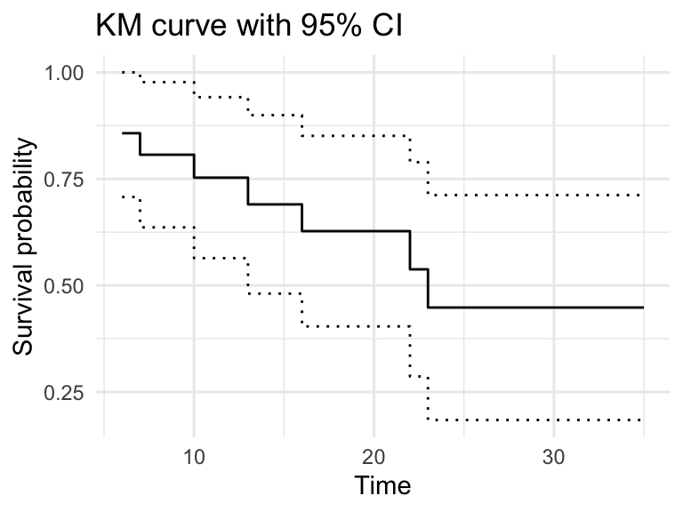
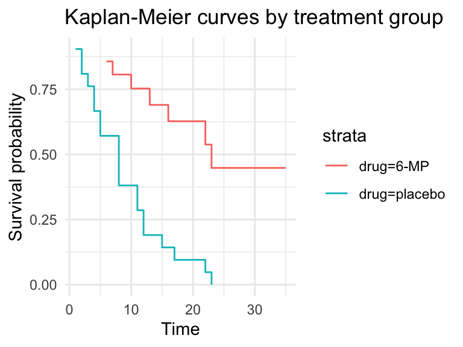

dat0 <- tibble(
time = c(20, 13, 10, 25, 18),
status = c(1, 0, 1, 1, 0) # 1 = event, 0 = censored
)
dat0# A tibble: 5 × 2
time status
<dbl> <dbl>
1 20 1
2 13 0
3 10 1
4 25 1
5 18 0(AST305) Lifetime Data Analysis I
Time-to-event data are observations of the form \((t_i, \delta_i)\) for \(i = 1, \dots, n\), where:
For the sample
\[ 20,\;13^{+},\;10,\;25,\;18^{+} \]
interpret the “+” as censored. In R:
dat0 <- tibble(
time = c(20, 13, 10, 25, 18),
status = c(1, 0, 1, 1, 0) # 1 = event, 0 = censored
)
dat0# A tibble: 5 × 2
time status
<dbl> <dbl>
1 20 1
2 13 0
3 10 1
4 25 1
5 18 0survival packageThere are many R packages for time-to-event analysis. For this course we use the survival package. (As checked online, the package version is 3.8-3.)
Authors and contributors include Terry M. Therneau (author and maintainer), Thomas Lumley, Elizabeth Atkinson, and Cynthia Crowson.
Use survfit() to get a nonparametric estimate of the survivor function.
survfit(Surv(time, event) ~ x, data = mydata)Notes:
Surv(...) constructs a survival object. Common arguments are time, time2 (for interval data), event, and type (“right”, “left”, “interval”).Surv(time, event) where event is 1 for failure and 0 for censoring.~ x adds strata. Use ~ 1 for a single (unstratified) curve.survfit() argumentsstype: 1 (direct estimation of the survival function) or 2 (estimate from cumulative hazard).ctype: method for cumulative hazard (1 = Nelson-Aalen, 2 = Fleming-Harrington).conf.type: confidence-interval transform; options include “none”, “plain”, “log” (default), “log-log”, and “logit”.mp6 <- c(6, 6, 6, 6, 7, 9, 10, 10, 11, 13, 16, 17,
19, 20, 22, 23, 25, 32, 32, 34, 35)
plc <- c(1, 1, 2, 2, 3, 4, 4, 5, 5, 8, 8, 8, 8,
11, 11, 12, 12, 15, 17, 22, 23)
gehan65 <- tibble(
time = c(mp6, plc),
status = c(1, 1, 1, 0, 1, 0, 1, 0, 0, 1, 1, 0, 0,
0, 1, 1, rep(0, 5), rep(1, 21)),
drug = c(rep("6-MP", 21), rep("placebo", 21))
)
glimpse(gehan65)Rows: 42
Columns: 3
$ time <dbl> 6, 6, 6, 6, 7, 9, 10, 10, 11, 13, 16, 17, 19, 20, 22, 23, 25, 3…
$ status <dbl> 1, 1, 1, 0, 1, 0, 1, 0, 0, 1, 1, 0, 0, 0, 1, 1, 0, 0, 0, 0, 0, …
$ drug <chr> "6-MP", "6-MP", "6-MP", "6-MP", "6-MP", "6-MP", "6-MP", "6-MP",…gehan65 %>% count(drug, status)# A tibble: 3 × 3
drug status n
<chr> <dbl> <int>
1 6-MP 0 12
2 6-MP 1 9
3 placebo 1 21Note: in this dataset there are no censored times for the placebo group.
dat6MP <- gehan65 %>% filter(drug == "6-MP")
mod1 <- survfit(
Surv(time = time, event = status) ~ 1,
data = dat6MP,
conf.type = "plain"
)
summary(mod1)Call: survfit(formula = Surv(time = time, event = status) ~ 1, data = dat6MP,
conf.type = "plain")
time n.risk n.event survival std.err lower 95% CI upper 95% CI
6 21 3 0.857 0.0764 0.707 1.000
7 17 1 0.807 0.0869 0.636 0.977
10 15 1 0.753 0.0963 0.564 0.942
13 12 1 0.690 0.1068 0.481 0.900
16 11 1 0.627 0.1141 0.404 0.851
22 7 1 0.538 0.1282 0.286 0.789
23 6 1 0.448 0.1346 0.184 0.712By default conf.type = "log" in survfit(); here we requested “plain” for demonstration.
Use broom::tidy() to convert the fit into a data frame and then plot with ggplot2 for a publication-ready figure.
fit_df <- broom::tidy(mod1)
fit_df %>%
ggplot(aes(x = time, y = estimate)) +
geom_step() +
labs(x = "Time", y = "Survival probability",
title = "Kaplan-Meier survival curve: 6-MP treatment") +
theme_minimal()
Add confidence bounds if desired:
fit_df %>%
ggplot(aes(x = time)) +
geom_step(aes(y = estimate)) +
geom_step(aes(y = conf.high), linetype = "dotted") +
geom_step(aes(y = conf.low), linetype = "dotted") +
labs(x = "Time", y = "Survival probability",
title = "KM curve with 95% CI") +
theme_minimal()
Use summary() with the times argument.
summary(mod1, times = 10)Call: survfit(formula = Surv(time = time, event = status) ~ 1, data = dat6MP,
conf.type = "plain")
time n.risk n.event survival std.err lower 95% CI upper 95% CI
10 15 5 0.753 0.0963 0.564 0.942Interpretation: the estimated probability of surviving to time 10 is reported in the output.
For publication-ready tables, gtsummary::tbl_survfit() can format estimates neatly:
mod1 %>%
gtsummary::tbl_survfit(
times = 10,
label_header = "**10-year survival (95% CI)**"
)| Characteristic | 10-year survival (95% CI) |
|---|---|
| Overall | 75% (56%, 94%) |
$quantile
20 25 50 75 80
10 13 23 NA NA
$lower
20 25 50 75 80
6 6 13 23 23
$upper
20 25 50 75 80
22 23 NA NA NA The output gives estimated times corresponding to the requested survival quantiles, for example the median (0.5).
mod1 %>%
gtsummary::tbl_survfit(
probs = 0.5,
label_header = "**Median survival (95% CI)**"
)| Characteristic | Median survival (95% CI) |
|---|---|
| Overall | 23 (13, —) |
mod2 <- survfit(
Surv(time = time, event = status) ~ drug,
data = gehan65,
conf.type = "plain"
)
broom::tidy(mod2) %>% select(time, estimate, strata)# A tibble: 28 × 3
time estimate strata
<dbl> <dbl> <chr>
1 6 0.857 drug=6-MP
2 7 0.807 drug=6-MP
3 9 0.807 drug=6-MP
4 10 0.753 drug=6-MP
5 11 0.753 drug=6-MP
6 13 0.690 drug=6-MP
7 16 0.627 drug=6-MP
8 17 0.627 drug=6-MP
9 19 0.627 drug=6-MP
10 20 0.627 drug=6-MP
# ℹ 18 more rows# Plot by strata
broom::tidy(mod2) %>%
ggplot(aes(x = time, y = estimate, colour = strata)) +
geom_step() +
labs(x = "Time", y = "Survival probability",
title = "Kaplan-Meier curves by treatment group") +
theme_minimal()
mod2 %>%
gtsummary::tbl_survfit(
times = 10,
label_header = "**10-year survival (95% CI)**"
)| Characteristic | 10-year survival (95% CI) |
|---|---|
| drug | |
| 6-MP | 75% (56%, 94%) |
| placebo | 38% (17%, 59%) |
mod2 %>%
gtsummary::tbl_survfit(
probs = 0.5,
label_header = "**Median survival (95% CI)**"
)| Characteristic | Median survival (95% CI) |
|---|---|
| drug | |
| 6-MP | 23 (13, —) |
| placebo | 8.0 (4.0, 11) |